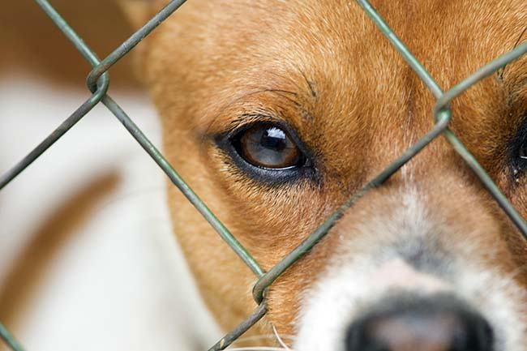

JAK ZAADOPTOWAĆ PSA?

Decyzja o adopcji psa nie może być chwilową zachcianką, tylko przemyślaną i dojrzałą decyzją. Kudłacz to spory obowiązek, jesteśmy też za niego odpowiedzialni i do tego często okazuje się, że ma zupełnie inny charakter i przyzwyczajenia, niż sobie to z góry założyliśmy. Żywe zwierzę nie jest zabawką i nigdy nią nie będzie. Psiak może chorować, brudzić, ma różne problemy, trudny charakter. Koniecznie weźmy to pod uwagę, zanim wybierzemy się do schroniska. Jeśli decyzja została już podjęta i wiemy, na co się decydujemy, warto wiedzieć kilka rzeczy o adopcji zwierzaka, także tych natury bardziej formalnej.
Przygotowania do adopcji psa
Najlepiej jest zacząć od wizyty w schronisku, psim azylu albo innej placówce, z której chcemy zaadoptować zwierzaka. Zdarza się, że psiaki adoptowane są od osób prywatnych, które prowadzą mini azyl albo zwyczajnie muszą oddać psiaka lub psiaki w dobre ręce. Nigdy nie podejmujmy decyzji na podstawie samej rozmowy przez telefon i wyłącznie po obejrzeniu zdjęć pupila. Musimy koniecznie poznać go na żywo, a najlepiej wyprowadzić na spacer i spędzić z psiakiem trochę czasu. Zdobądźmy też jak najwięcej informacji o przyszłym pupilu - co lubi, na co chorował, czy coś wiadomo o jego przeszłości, jak dogaduje się z innymi zwierzakami, z dziećmi, czy jest wysterylizowany, czy ma jakieś schorzenia, które zostaną z nim do końca życia. Taka wiedza jest bezcenna i pozwala nam lepiej zrozumieć psiaka oraz przygotować się do opieki nad nim. W ten sposób unikniemy też wielu niespodzianek.
Wybieramy psa w schronisku
Musimy odpowiedzieć sobie na pytanie, jakiego psiaka szukamy? Pierwsza sprawa to sam wiek – możemy adoptować szczeniaka, dorosłego kudłacza, a nawet psiego seniora. Im dłużej zwierzak przebywa w schronisku, tym trudniej może mu być dostosować się do normalnego życia, ale też dajemy mu ogromną szansę przeżycia ostatnich lat w ciepłej, domowej atmosferze. Starsze psy są najrzadziej wybierane. Niektórzy mają wyobrażenie, jakiego kudłacza szukają, inni postanawiają podjąć decyzję pod wpływem impulsu. Są tacy, którzy specjalnie wybierają słabe, niepełnosprawne, starsze albo wyjątkowo mizerne psiaki, bo wiedzą, że mają one najmniejsze szanse na adopcję. Czasami zdarza się też tak, że jedno spojrzenie w psie oczy tak podbije nasze serce, że od razu wiemy, że chcemy tego zwierzaka i tylko jego. Pamiętajmy, że wybierając kudłacza musimy mieć na uwadze nasze warunki mieszkaniowe, możliwości czasowe i siłę. Duże psiaki wymagające częstych i długich spacerów oraz wzmożonej aktywności fizycznej nie są dla każdego. Niektóre zwierzaki mają też choroby przewlekłe, na przykład wątroby lub trzustki i wymagają leczenia do końca życia. Wiele z psiaków ma ponadto za sobą okropne doświadczenia, są bardzo lękliwe, bywają agresywne wobec otoczenia albo samych siebie. Musimy zdawać sobie sprawę, że takich urazów psychicznych nie wyleczymy z dnia na dzień, a być może nie zapanujemy nad nimi nigdy.
Proces adopcji psa
Podjęliśmy decyzję o zaadoptowaniu psa? Teraz pora na formalności. Po pierwsze, musimy być osobą pełnoletnią. Jeśli tak nie jest, do schroniska idziemy z osobą starszą, mamą, ciocią, bratem, to już kwestia dogadania się. Po drugie, będziemy musieli podpisać umowę adopcyjną. Po trzecie, potrzebujemy dowodu osobistego, a także smyczy i obroży (kaganiec też się przyda), skoro zabieramy psiaka ze sobą.
Czy schronisko może nam nie wydać pupila? Tak się niestety zdarza. Może się okazać, że nie mamy odpowiednich warunków mieszkaniowych. Duży pies w ciasnej kawalerce to nie jest dobre połączenie. Są też takie psiaki, które wymagają doświadczonych właścicieli. Na nas spoczywa też obowiązek zapewnienia kudłaczowi odpowiednich warunków rozwoju, w tym codziennej aktywności. Psiaki po wyjątkowo trudnych przejściach z przeszłości są wydawane wyłącznie opiekunom, którzy mają na ten temat jakieś pojęcie i są wyjątkowo ciepłymi oraz cierpliwymi osobami. Z psiakiem jest oczywiście łatwiej niż z adopcją dziecka, ale w schronisku także możemy dostać odmowę.
Istnieje też coś takiego jak opłata adopcyjna. Wynosi ona od kilkunastu do mniej więcej dwustu złotych. Zazwyczaj mieści się w dolnym przedziale cenowym, czasami jest to wręcz symboliczna złotówka wrzucona do puszki, jako datek na schronisko. Przed adopcją psa koniecznie dowiedzmy się, czy został wykastrowany/wysterylizowany. Zazwyczaj tak właśnie jest, ale zdarzają się wyjątki. Warto też wiedzieć, czy psiak przechodził jakieś poważne choroby, czy miał kiedyś coś uszkodzone, a także jaką karmą jadł w schronisku. Warto się jej na początku trzymać, aby nie fundować zwierzakowi rewolucji żywieniowej. Przyda się też wizyta u weterynarza, bo choć schroniska dbają o swoich podopiecznych, nie zawsze odrobaczenie przynosi odpowiednie skutki. W dużych skupiskach futrzaków zdarzają się też często choroby skórne, takie jak na przykład świerzb.
Czy coś więcej? Potrzebujemy dużo pozytywnej energii, cierpliwości i łagodności, a psiak na pewno szybko zostanie naszym ukochanym przyjacielem!